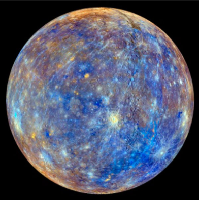

Mercurio
Es el que está más cerca del Sol y también el más chiquitín. Es un plantea sin satélites en su órbita. Su superficie, cubierta de roca y cráteres, se parece a la de la Luna.
Su nombre es en honor a Mercurio, dios romano del comercio.

volver al sistema solar